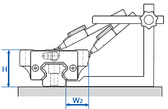

滾珠螺桿系列
轉造級滾珠螺桿
滾珠螺桿支撐座
高荷重螺桿支撐座
馬達傳動座
線性滑軌系列
SL
潤滑裝置系列
KM
線性模組系列
LMC
單軸心式滑軌
LGD
雙軸心式滑軌
聯軸器
直線軸承
精密鎖定螺帽
滾珠螺桿庫存區
線性滑軌精度標準等級
Linear Guideway Accuracy
滑軌安裝方式
預壓與剛性
精度標準等級
線性滑軌的精度可分為行走平行度、高度 (H) 及寬度 (W
2
) 的尺寸容許誤差。
滑軌單軸使用或在同平面使用複數軸時，
規範各個滑塊組合高度與寬度的成對相互差。
各型號的精度分為 :
普通級(
N
)、 高級(
H
)、 精密級(
P
)、 超精密級(
SP
) 與超高精密級(
UP
)五個等級。
行走平行度
是指將滑軌以螺栓固定在基準面上，使滑塊在滑軌全長上運行時，滑塊與滑軌基準面之間的平行度誤差，如圖所示。
高度的成對相互差(ΔH)
是指組合在同平面上的各個滑塊的高度尺寸
(H) 的最大值與最小值之差。
寬度的成對相互差(ΔW
2
)
是指裝在單支滑軌上的每個滑塊與滑軌基準面之間的寬度
(W
2
) 尺寸的最大值與最小值之差。

注意事項：
同平面上兩軸以上配對使用時，寬度 (W
2
) 的尺對容許誤差與成對相互差 (ΔW
2
) 只適用於基準側，而基準側滑軌的製造號碼末尾， 印有 "MR" 標記，但是普通級 (N) 滑軌沒有此記號。
精度測定值是以滑塊中心點或中心部的平均值為基準。
精度等級的選用
各種設備使用的線性滑軌精度選用基準參考
分類
設備名稱
精度等級
N
H
P
SP
UP
機床
機械加工中心
車床
銑床
鏜床
座標鏜床
磨床
放電加工機
沖壓機械
雷射加工機
木工機
NC鑽床
攻牙中心
工作盤交換裝置
自動換刀系統
線切割機
砂輪修整裝置
數控雕銑機
輕型數控銑床
分類
設備名稱
精度等級
N
H
P
SP
UP
工業用
機器人
直交
座標型
圓柱
座標型
半導體
製造
設備
打線機
針測機
電子零件插件機
印刷電路板鑽孔機
其
它
機
器
射出成型機
三次元量測機
辦公機器
搬運設備
XY工作台
塗裝機
焊接機
醫療設備
Digitizer
量測設備
返回首頁
|
產品介紹
|
滾珠螺桿
|
線性滑軌
|
線性模組
|
聯軸器
|
檔案下載
|
聯絡我們
Copyright
© 2018
HONG YI PRECISION CO.,LTD.
鴻翊精密股份有限公司
TEL: 04-2426 5828 FAX: 04-2425 9082
台中市北屯區環中路一段1702-3號